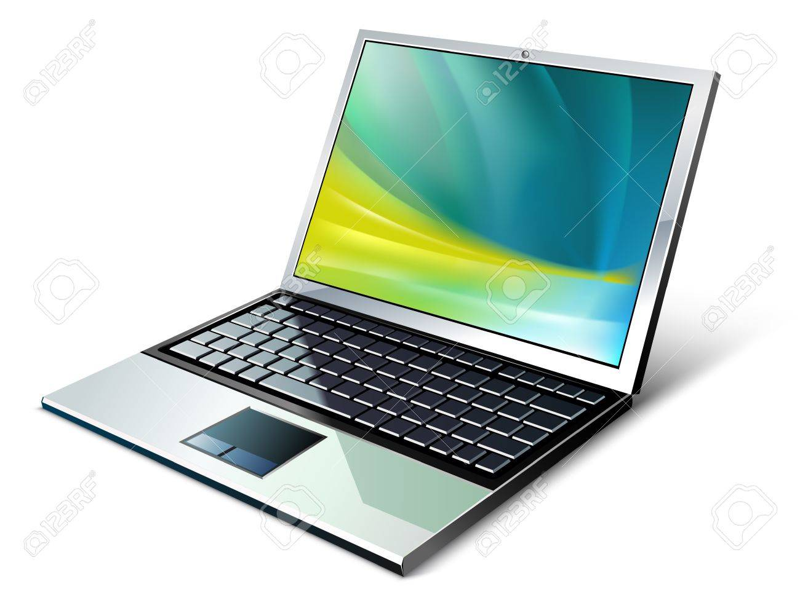

La tecnología puede clasificarse según su uso y función. A continuación, se presentan algunos tipos con sus respectivas aplicaciones y representaciones visuales.
Tecnologías destacadas
| Tipo | Aplicación | Imagen |
|---|---|---|
| Informática | Computadoras, software |  |
| Médica | Diagnóstico por imagen |  |
| Espacial | Satélites, cohetes |  |
Otras tecnologías relevantes
- Biotecnología
- Nanotecnología
- Robótica
- Inteligencia artificial